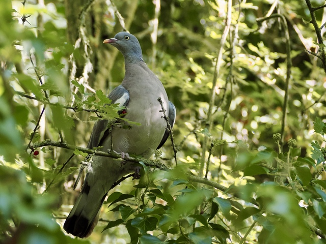
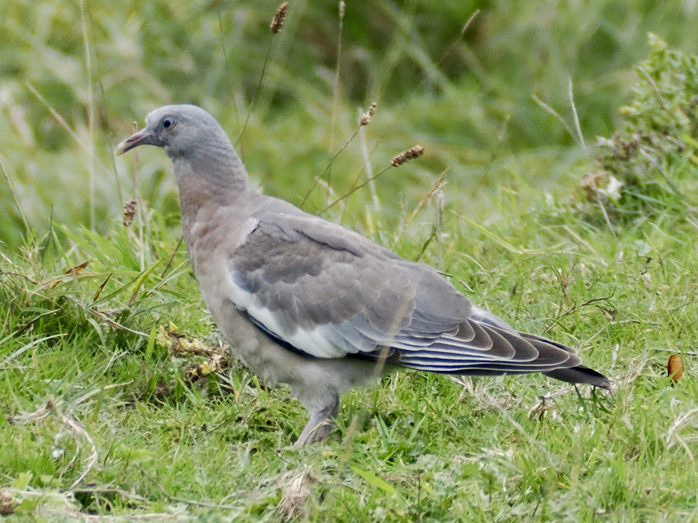

Common Wood-Pigeon
Columba palumbus

A thick, grey pigeon with a white neck patch and white wing patches. Rosy wash on breast. Also, they have strange eyes. Their pupils are neither completely round nor centred properly.

Juvenile lacks the white neck patch.